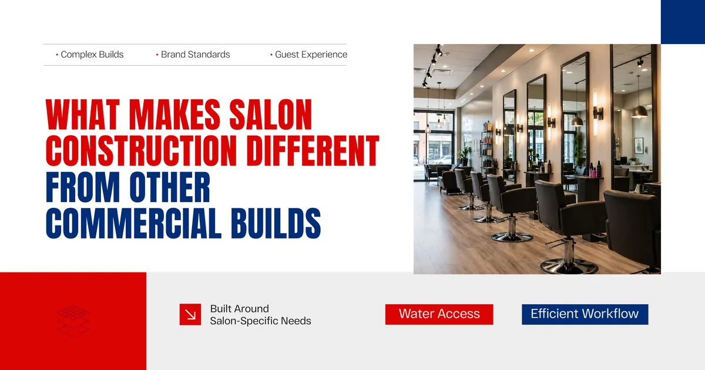
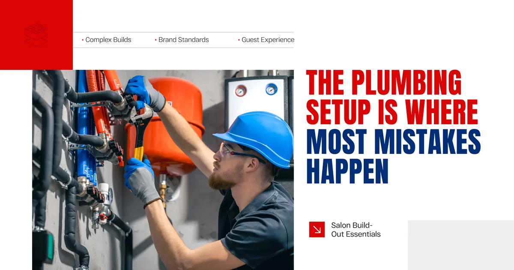
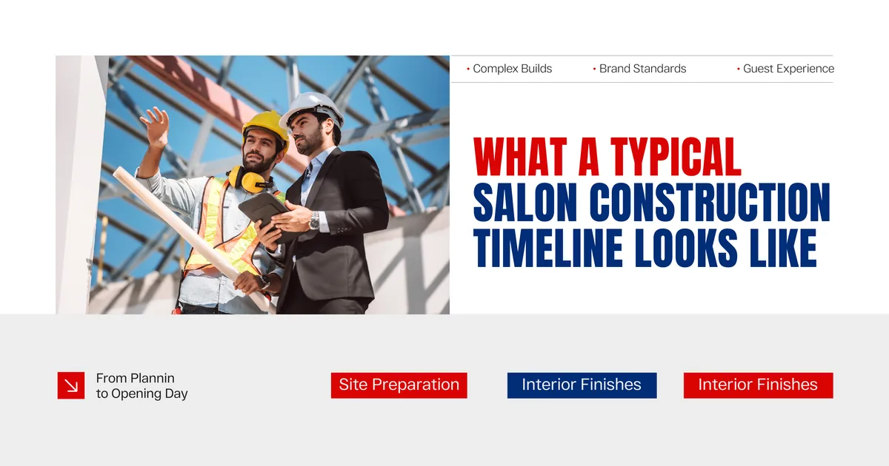
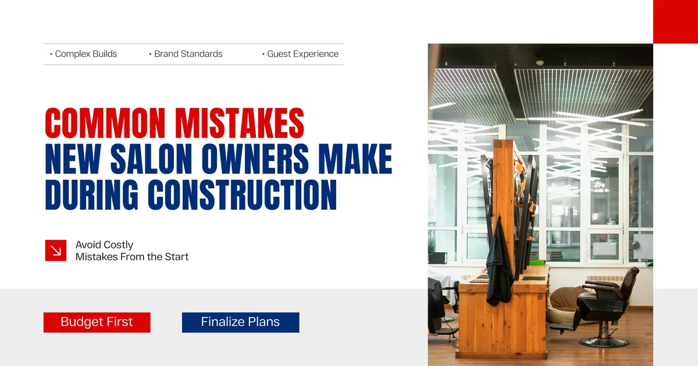
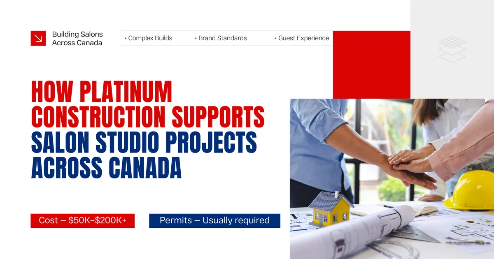

Salon construction is not the same as a standard commercial fit out. There are plumbing stations to place, ventilation systems that need to handle chemical fumes, electrical loads for multiple styling tools running at once, and a layout that needs to feel welcoming the moment someone walks through the door. Getting any of these wrong costs money to fix later, and sometimes it costs clients who do not come back.

What Makes Salon Construction Different From Other Commercial Builds
A lot of new business owners assume a salon fit out is straightforward. Walls, flooring, some plumbing, done. In reality, a salon has more specialized requirements per square foot than most small commercial spaces.
Every styling station needs dedicated electrical capacity. Shampoo bowls require both hot and cold water lines plus proper drainage. Color processing areas need ventilation that moves fumes safely out of the space. Storage needs to be planned around workflow, not just available wall space. And all of this needs to sit inside a layout that actually makes the workday comfortable for stylists and relaxing for clients.
A construction company that has built salons before understands these details without needing to be told. One that has not will often treat your project like a generic renovation, and the gaps show up during the build.

The Plumbing Setup Is Where Most Mistakes Happen
Shampoo bowl placement is one of the first decisions that gets locked in during construction because it determines where the plumbing rough in goes. Once those pipes are in the wall, moving them is expensive. This is why the layout needs to be finalized before construction starts, not changed halfway through.
An experienced local construction company will walk you through this conversation early, help you understand the cost implications of different placements, and make sure the plumbing is sized correctly for the number of stations you plan to operate.
Electrical Planning Matters More Than Most Owners Expect
Salon equipment draws a significant amount of power. Dryers, flat irons, color processing lamps, and reception area technology all pull from the same system. If the electrical is not planned with the full load in mind, you end up with tripped breakers, underpowered stations, and a licensed electrician back on site at your expense.
A solid building construction company plans the electrical layout around actual equipment needs from the start, not as an afterthought once the walls are already up.
Key Elements of a Salon Studio Build Out
Every salon is different, but certain elements come up in almost every build. Here is a practical overview of what to expect and where to focus your attention.
| Build Element | What to Plan For |
|---|---|
| Plumbing | Shampoo bowl locations, water supply sizing, drainage routing |
| Electrical | Station capacity, lighting circuits, reception and retail power needs |
| Ventilation | Chemical fume extraction, general air circulation, HVAC sizing |
| Flooring | Durability, slip resistance, ease of cleaning between clients |
| Lighting | Task lighting at stations, ambient lighting for client comfort |
| Storage | Product organization, equipment access, back bar layout |
| Reception Area | Client flow, retail display, point of sale setup |
Going through this list with your construction company before work begins prevents the kind of mid project changes that push timelines and budgets in the wrong direction.
How to Choose the Right Construction Company for a Salon Build
Not every commercial construction company has experience with salon specific requirements. Choosing the right builder makes a significant difference in how smoothly the project goes and how well the finished space actually functions.
Ask About Relevant Experience
The best construction company for your salon build is not necessarily the largest or the cheapest. It is the one that understands what a working salon actually needs. Ask directly whether they have completed similar projects. Ask to see photos. Ask what challenges came up and how they handled them.
Look for a Builder Who Works With Your Timeline
New salon owners often have a lease start date they are working toward, which means the construction timeline is not flexible. Commercial builders who understand this kind of deadline pressure plan accordingly from the first conversation, rather than treating your timeline as a secondary concern.
Prioritize Clear and Itemized Pricing
A vague estimate is one of the clearest warning signs in any construction project. A trustworthy local construction company will provide a detailed, itemized proposal that breaks down exactly what is included, so there are no surprise charges when the invoice arrives.
Confirm They Manage Permits
Salon builds require permits in most Canadian municipalities, covering plumbing, electrical, and sometimes ventilation work. A reliable construction company handles this process as part of the project, not something left to the business owner to figure out independently.

What a Typical Salon Construction Timeline Looks Like
Understanding the general sequence helps you plan your business launch around the construction schedule rather than being caught off guard by how long certain stages take.
| Stage | Typical Duration |
|---|---|
| Design finalization and permits | 4 to 8 weeks depending on municipality |
| Demolition and rough in work | 2 to 3 weeks |
| Plumbing and electrical rough in | 2 to 3 weeks |
| Drywall, flooring, and ceiling work | 2 to 3 weeks |
| Fixture installation and finishes | 2 to 3 weeks |
| Inspections and final sign off | 1 to 2 weeks |
Total timelines vary, but most salon studio builds in Canada run between 3 and 5 months from permit approval to occupancy, depending on the size of the space and how complex the fit out is.

Common Mistakes New Salon Owners Make During Construction
Knowing where things tend to go wrong helps you avoid the same mistakes other first time salon owners have made before you.
Locking in the lease before confirming the construction budget is one of the most common problems. A space that looks affordable on paper can become expensive once the actual build cost is factored in, especially if significant plumbing or electrical upgrades are needed.
Choosing a builder based on price alone is another mistake that shows up often. A lower quote from a construction company with no salon experience usually leads to changes, delays, and extras that push the final cost well past what a more experienced builder would have charged upfront.
Not leaving room in the budget for contingency is also something that catches new business owners off guard. Even well planned salon projects encounter unexpected conditions, especially in older commercial spaces where existing infrastructure does not match what the drawings show.

How Platinum Construction Supports Salon Studio Projects Across Canada
At Platinum Construction, we understand that a salon build is not just a construction project. It is the foundation of a business you have worked hard to launch. We bring that level of care to every project we take on.
Our teams work across Ontario, British Columbia, Alberta, and Atlantic Canada. We understand the regional permit processes and local inspection requirements that affect salon build timelines differently depending on the city. Whether your space is in a busy urban strip or a suburban commercial plaza, we adapt to the specific requirements of your location.
We start every salon project with a detailed conversation about how you plan to use the space, how many stations you need, and what your realistic budget looks like. From there we develop a plan that reflects what the build actually requires, not a generic fit out package that needs to be modified halfway through.
Our project managers stay in regular contact throughout construction so you are never left wondering what is happening on site or whether things are on track.
Frequently Asked Questions
How much does a salon studio build out cost in Canada
Costs vary widely based on size, finish level, and existing conditions in the space. Most salon builds in Canada range from fifty thousand to over two hundred thousand dollars depending on complexity.
Do I need permits for a salon build out
Yes. Salon fit outs typically require plumbing, electrical, and building permits in most Canadian municipalities. A good construction company manages this process as part of the project.
How long does a salon construction project usually take
Most projects run between three and five months from permit approval to occupancy, though smaller spaces with simpler layouts can be completed faster.
What is the most important thing to finalize before construction starts
Shampoo bowl placement and the overall layout need to be confirmed before rough in work begins, since plumbing is difficult and expensive to move once it is installed.
Should I hire a local construction company for a salon build
Yes. Local construction companies understand regional permit processes and inspection timelines better, which helps keep the project on schedule.
Can the construction company help with the salon layout and design
Many commercial builders can provide input on layout from a construction and workflow perspective, though a separate interior designer is often helpful for the finish and aesthetic decisions.
What should I look for in a contractor quote for a salon build
Look for an itemized breakdown that covers plumbing, electrical, ventilation, finishes, and permit costs separately, so you understand exactly what is included before work begins.
Get the Final Solution With Platinum Construction
A well built salon studio sets the tone for everything that comes after it. Clients notice the details, stylists work better in a space that is laid out properly, and a smooth build process means your business opens on time without the financial stress of unexpected costs.
Choosing the right construction company in Canada for your salon project is one of the most important early decisions you will make as a new business owner. Take your time, ask the right questions, and work with a builder who has done this before.
If you are planning a salon studio build in Canada and want a team that understands what the finished space actually needs to deliver, Platinum Construction is ready to help. Visit platinumconstruction.com to start the conversation.